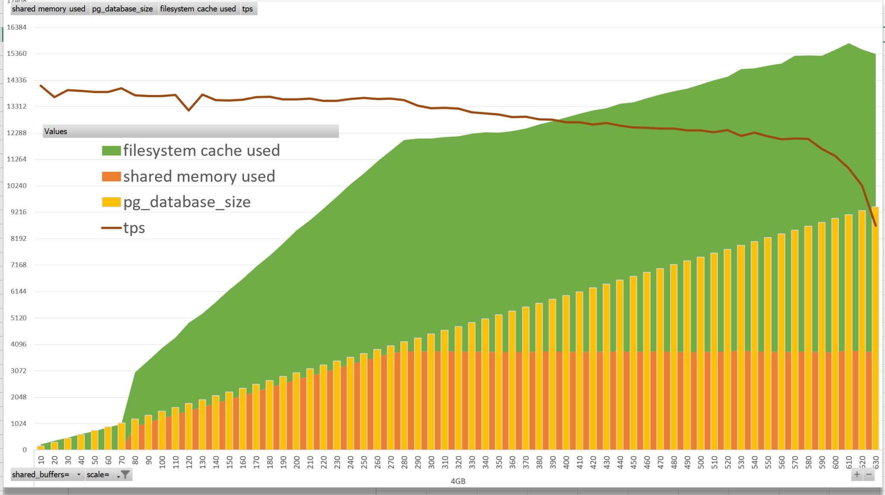

This was first published on https://www.dbi-services.com/blog/postgresql-on-linux-what-is-cached/ (2021-02-14)
Republishing here for new followers. The content is related to the versions available at the publication date.
.
In a recent tweet I wanted to highlight the importance of knowing what you measure with pgbench, because looking at “Transactions per second” without knowing if you are in shared buffer cache hits, or filesystem cache hit, or storage cache hit, or physical read… is just meaningless:
When you run the #postgres builtin pgbench, you should know:
– the size of the dataset on disk, about 15MB x scale
– the size of accessed shared_buffers (I see about 90% of size for a select-only workload)
– the size cached by the filesystem (looks like I have 2x here 🤔) pic.twitter.com/h86pruEjhE— Franck Pachot (@FranckPachot) February 8, 2021
The “scale” with the default pgbench tables stores about 15MB per scale value, mostly in the pgbench_accounts table and indexes. The default select-only workload apparently reads 90% of it. But I also mentioned that the filesystem “cached” is two times this size, and this is where a tweet is too short to explain. This is actually wrong, except that this is exactly what is reported by `free` or /proc/meminfo in the “cache” metric. When you read 1GB you will not have 2GB cached from the file reads. However, if shared_buffers is large enough, you will have 1GB in file cache and 1GB in shared memory, and both are reported by the “cached” value, even when `free`also reports the `shared` part independently. And that’s why in this tweet, I have put the green bars behind the yellow ones, rather than on top: “cached” includes “shared”
The basic Linux metrics are misleading, and many people read them without really knowing what they measure. I encourage everyone to read the docs and look at small specific test cases to get a better understanding. Here is one on PostgreSQL.
sudo yum install -y gcc readline-devel zlib-devel bison bison-devel flex
git clone --branch REL_13_STABLE https://github.com/postgres/postgres.git
( cd postgres && ./configure --enable-debug && make &&sudo make install && cd contrib && sudo make install )
I’ve installed PostgreSQL in my lab, from the source because I often want to have the debug symbols.
git clone https://github.com/yazgoo/linux-ftools
( cd linux-ftools/ && ./configure && make && sudo make install )
I’ve installed ftools which have an interesting fincore utility to show how files are mapped in the filesystem cache
/usr/local/pgsql/bin/pg_ctl initdb -D ~/pgdata
/usr/local/pgsql/bin/pg_ctl -D ~/pgdata -l pglog start
/usr/local/pgsql/bin/pgbench -i -s 42 postgres
/usr/local/pgsql/bin/psql postgres <<<" create extension pg_prewarm; "
I’ve created a PostgreSQL database, initialized a pgbench schema with scale=42 (about 630 MB) and installed the pg_prewarm extension to load quickly a table in cache.
[opc@instance-20210203-1009 ~]$ df -h pgdata
652M pgdata/base
[opc@instance-20210203-1009 ~]$ grep ^shared pgdata/postgresql.conf
shared_buffers = 900MB
shared_memory_type = mmap
I allocated 900MB of shared buffers.
Important point: I have not allocated huge pages here. All metrics displayed here (with `free`) are about small pages. The shared_buffers allocated in huge page are not counted in the “shared” metric. I have an older blog post about this.
[opc@instance-20210203-1009 ~]$ /usr/local/pgsql/bin/pg_ctl -D ~/pgdata -l pglog stop
waiting for server to shut down.... done
server stopped
[opc@instance-20210203-1009 ~]$ sudo su << "/proc/sys/vm/drop_caches"'
[opc@instance-20210203-1009 ~]$ free -mw
total used free shared buffers cache available
Mem: 14714 3443 11061 33 0 209 10989
Swap: 8191 3061 5130
With the instance stopped, and sync’d and flushed, I have nearly no shared memory used in this system, 209M cached and 10GB free.
[opc@instance-20210203-1009 ~]$ /usr/local/pgsql/bin/pg_ctl -D ~/pgdata -l pglog start
waiting for server to start.... done
server started
[opc@instance-20210203-1009 ~]$ free -mw
total used free shared buffers cache available
Mem: 14714 3446 11005 72 0 261 10940
Swap: 8191 3061 5130
With the instance started, nothing changes. Because Linux does lazy allocation for SHM: shared buffers will be allocated when used, so only very little is there for other areas.
[opc@instance-20210203-1009 ~]$ /usr/local/pgsql/bin/psql postgres <<<" select pg_size_pretty(current_setting('block_size')::int*pg_prewarm('pgbench_accounts','buffer')); "
pg_size_pretty
----------------
538 MB
(1 row)
[opc@instance-20210203-1009 ~]$ free -mw
total used free shared buffers cache available
Mem: 14714 3448 9917 611 0 1348 10378
Swap: 8191 3061 5130
I loaded the 538MB of pgbench_account table. It was first read to the filesystem cache, increasing to “cache” with this size, and copied from there to the shared buffer cache. As it fits there, the “shared” size is now raised from 72M to 611M. However, because “cache” includes “share” it shows 1.3G but a more interesting number is “available” which decreased by 562 because the shared buffers cannot be reclaimed, but the file cache can be reclaimed, once synced, if physical memory is needed.
That’s the specificity of PostgreSQL. A shared memory segment is allocated in userspace to manage concurrent writes to the pages, and read them from this shared buffer cache for frequently read data. But, contrary to most RDBMS, no further optimization is done here in the RDBMS code (like prefetching for reads, reordering for writes). This means that we must have sufficient available space for the filesystem cache where those optimization will happen in the kernel space. The frequently read data which does not fit in shared_buffers should be cached there. And the pages written to the shared_buffer should be filesystem cache hits at checkpoint time. That’s PostgreSQL double buffering and it is visible in the “cache” value, where both are accounted.
In order to get better predictability of performance, it is very important to understand what is in filesystem cache and there’s a utility that can help. I installed linux-ftools above, and here is linux-fincore to get a summary of cached files:
[opc@instance-20210203-1009 ~]$ linux-fincore -s $(find pgdata/base -type f) | grep ^total
total cached size: 565,534,720
Here are my 539MB of data. Unfortunately, you need to pass the file list you want to check. That’s why I start to look at the total only, in order to be sure that my set of file are representative of what I find in the filesystem cache. Here, from all files under PGDATA I have 539MB in cache and I know this is the size I’ve read.
[opc@instance-20210203-1009 ~]$ linux-fincore -s -S 1048576 $(find pgdata/base -type f)
filename size total_pages min_cached page cached_pages cached_size cached_perc
-------- ---- ----------- --------------- ------------ ----------- -----------
pgdata/base/13581/16438 564,043,776 137,706 0 137,706 564,043,776 100.00
pgdata/base/13581/16446 94,363,648 23,038 -1 0 0 0.00
---
total cached size: 564,043,776
I show the detail here, only for files with more than 1MB in cache. And of course, this can be joined with the file path within the data directory:
[opc@instance-20210203-1009 ~]$ \
/usr/local/pgsql/bin/psql postgres <<<" select relname,relkind,current_setting('block_size')::int*relpages/1024/1024 as size_MB,current_setting('block_size')::int*buffers/1024/1024 as shared_mb,relfilenode,current_setting('data_directory')||'/'||pg_relation_filepath(oid) as file_path from pg_class c left outer join (select relfilenode, count(*) as buffers from pg_buffercache group by relfilenode) b using(relfilenode) where relpages>100;" | awk '/[/]base[/]/{"linux-fincore -s "$NF"* | grep ^total | cut -d: -f2" | getline f;printf "%6dM %s\n",gensub(/,/,"","g",f)/1024/1024,$0;next}{printf "%6s %s\n","",$0}'
relname | relkind | size_mb | shared_mb | relfilenode | file_path
-----------------------+---------+---------+-----------+-------------+-----------------------------------
537M pgbench_accounts | r | 537 | 537 | 16438 | /home/opc/pgdata/base/13581/16438
0M pgbench_accounts_pkey | i | 89 | | 16446 | /home/opc/pgdata/base/13581/16446
(2 rows)
This is a quick and dirty one-liner to get the size in filesystem, with the total size and size in shared_buffers (thanks to the pg_buffercache extension) for objects with more than 100 pages.
[opc@instance-20210203-1009 ~]$ sudo su << "/proc/sys/vm/drop_caches"'
[opc@instance-20210203-1009 ~]$ free -mw
total used free shared buffers cache available
Mem: 14714 3478 10438 612 0 797 10370
Swap: 8191 3040 5151
I flushed the cache (don’t do that in production!) and only the shared memory remains (mostly)
[opc@instance-20210203-1009 ~]$ /usr/local/pgsql/bin/pg_ctl -D ~/pgdata -l pglog stop waiting for server to shut down.... done
server stopped
[opc@instance-20210203-1009 ~]$ free -mw
total used free shared buffers cache available
Mem: 14714 3477 11009 34 0 227 10945
Swap: 8191 3040 5151
When the PostgreSQL instance is stopped the shared memory is released.
You may wonder what are those 227M that are still in cache. I have many things running in this lab, but let’s check:
[opc@instance-20210203-1009 ~]$ find / -type f -exec linux-fincore {} \; 2>/dev/null | awk '/^[/]/{gsub(/,/,"");m=$(NF-1)/1024/1024;gsub(/ */," ");if(m>1)printf "%10d MB %s\n",m,$0}' | sort -h | tee all.log | sort -n | tail -10
73 MB /var/cache/yum/x86_64/7Server/ol7_developer_EPEL/gen/primary_db.sqlite 76955648 18788 0 18788 76955648 100.00
75 MB /home/opc/simulator_19.9.0.0.0/portainer_image.tar 78691328 19212 0 19212 78692352 100.00
83 MB /usr/bin/dockerd 87196536 21289 0 21289 87199744 100.00
93 MB /home/opc/simulator_19.9.0.0.0/jre/lib/amd64/libjfxwebkit.so 97667680 23845 0 23845 97669120 100.00
102 MB /usr/lib/locale/locale-archive 107680160 26290 0 26290 107683840 100.00
104 MB /var/lib/rpm/Packages 109428736 26716 0 26716 109428736 100.00
189 MB /var/cache/yum/x86_64/7Server/ol7_latest/gen/primary_db.sqlite 198237184 48398 0 48398 198238208 100.00
224 MB /home/opc/simulator_19.9.0.0.0/oda_simulator.tar.gz 235565495 57512 0 57512 235569152 100.00
229 MB /home/opc/simulator_19.9.0.0.0/oraclelinux_image.tar 240947200 58825 0 58825 240947200 100.00
486 MB /home/opc/pgdata/base/13581/16438 564043776 137706 1969 124652 510574592 90.52
This took a while but shows which files are in cache. Those .tar and .tar.gz seems to be related to my previous blog post on ODA Simulator and are docker bind mounts. However, lsof and fuser shows me that they are not used. I didn’t spend lot of time on this but I don’t know how to get them out of the cache.
However, back to the topic and now that the “cache” metric is understood, here is the initial test I did with pgbench: 
All is run with shared_buffers=4GB. The values displayed as orange and green areas are the increase of size, in MB, after the pgbench run, values taken from `free -wm`. When scale is less than 70, the size of pg_bench database is 1054MB (yellow), I see no additional SHM allocated (orange) and the filesystem “cached” (green) increases by the size read from files. Then, when scale increases to 270 the SHM allocates memory to fit those pages in shared_buffers (orange). The “cached” (green) includes the SHM and shows the filesystem cached. Above the 280 scale, the SHM doesn’t goes higher because we reached the 4GB of shared_buffer. There is still free memory at OS level and then the “cache” increases with the size of data read. I’ve also added the performance metric “tps” – transactions per seconds. Running this select-only workload on a scale that fits in shared_buffers shows constant performance (about 13500 tps here in single thread). It decreases slowly when there’s some pages to copy from the filesystem cache. And when I reach a scale that doesn’t fit in physical RAM, physical reads are involved and tps gets much lower. I have 14GB of RAM here and I reach this point at scale 570 with 8GB of frequently read data to fit in addition to the 4GB of shared_buffers.
This illustrates the behavior of PostgreSQL double buffering. You should have an idea about the frequently read data that you want to fit in shared_buffers for maximum performance. And the additional size that must be available in physical memory to avoid I/O latencies. This is select-only workload. Now imagine that 10% of this data is updated… new tuples, new pages, in shared_buffers, checkpointed to the filesystem cache, synced, and the related WAL also goes there, usually with full page logging. You need a lot of RAM. And looking at pgbench results without knowing those sizes is meaningless. And looking at OS metrics is a must, given that the understanding goes beyond a guess from the name.
{kind=link}